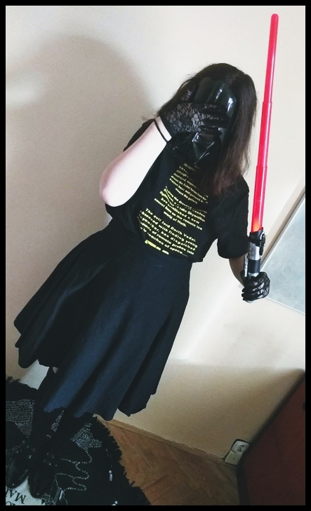

Studium
-
2018-2019 Muzejní pedagogika (celoživotní studium; Moravské zemské
muzeum)
-
2015-2017 Expresivní terapie se zaměřením na arteterapii (celoživotní
studium, Masarykova univerzita v Brně)
-
2014-2017 Veřejná správa a sociální politika (magisterské studium,
Slezská univerzita v Opavě)
-
2011-2014 Veřejná správa a regionální politika (bakalářské studium;
Slezská univerzita v Opavě)
Pracovní zkušenosti
- 2020-doposud Osobní konzultant (Diecézní charita Brno)
-
2020-doposud Projektová manažerka (dobrovolník; Opuštěné kočičí
tlapky)
- 2017-doposud Vedoucí projektu a týmu (Domov pro mne, z.s.)
- 2018-2020 Manažerka kvality (TyfloCentrum Brno, o. p. s.)
Znalosti a dovednosti
| Program |
Úroveň |
Jazyky |
Úroveň |
| Canva |
pokročilý |
Angličtina |
B2 |
| Adobe Illustrator |
začátečník |
Polština |
A2 |
| Procreate |
pokročilý |
| Figma |
začátečník |
| MovieMaker |
pokročilý |
| Microsoft Office |
pokročilý |
| Wordpress |
pokročilý |
Zájmy
-
Relaxační meditace aneb maraton Star Wars (IV., V., VI.), Rogue One,
Mandalorian
- Přednášení na českých a slovenských conech
- Knihy a komiksy
- Swing